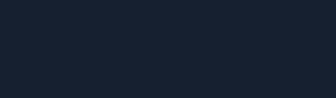

Contoh Aplikasi (demo) https://dev.contoh.example
2026-11-19 (contoh)
Security Audit Kit — dibuat oleh hadymaggot · https://github.com/hadymaggot/security-audit-kit
6 instance temuan · 6 alert · 1 CVE · 2 kontrol lolos
Pengujian menemukan 6 instance temuan (1 Critical, 3 High, 1 Medium, 1 Low) yang tergolong dalam 6 jenis alert. Temuan berisiko tertinggi: Kontrol akses rusak (role rendah membuka area terbatas); SQL Injection (A03); Web server versi rentan (CVE diketahui). Perbaikan disarankan memprioritaskan temuan Critical dan High terlebih dahulu. Rincian teknis, bukti endpoint, dan rekomendasi tersedia pada bagian Rincian Temuan.
Dampak. Peningkatan hak akses (privilege escalation), pembuatan/penghapusan akun, perubahan data kritikal — berpotensi pengambilalihan sistem.
Rekomendasi utama. Tegakkan otorisasi di SISI SERVER pada setiap endpoint, bukan hanya menyembunyikan menu di klien.

Dampak. Pembacaan/perubahan data di luar wewenang, bypass autentikasi, hingga potensi RCE tergantung konfigurasi DBMS.
Rekomendasi utama. Gunakan prepared statement / parameterized query (bind parameter), jangan merangkai string query dari input.
Dampak. Bergantung CVE-nya, berpotensi remote code execution, DoS, atau memory corruption pada server yang terekspos.
Rekomendasi utama. Update ke versi yang sudah diperbaiki sesuai advisory vendor (mis. Apache httpd 2.4.71+, NGINX 1.30.7+/1.31.9+).
Dampak. Secret yang bocor dapat dipakai menyalahgunakan layanan pihak ketiga, mengakses data, atau pivot ke sistem internal.
Rekomendasi utama. Cabut (revoke) dan rotasi segera secret yang bocor; anggap sudah terkompromi.
Dampak. Situs jahat yang dibuka korban bisa mengirim request berkredensial ke API dan membaca responsnya — pencurian data terautentikasi lintas-origin.
Rekomendasi utama. Jangan pantulkan Origin mentah. Pakai allowlist origin yang tepercaya saja.
Dampak. Memudahkan clickjacking, MIME sniffing, XSS, dan fingerprinting server.
Rekomendasi utama. Set header di reverse proxy/framework:
Laporan lengkap: laporan.html. Dokumen bersifat RAHASIA / CONFIDENTIAL.
Security Audit Kit — dibuat oleh hadymaggot · https://github.com/hadymaggot/security-audit-kit